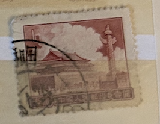
| SOURCE | TITLE| IMAGE MATCH | click to source page |
| Xabusiness.com | R9 Scott 282-286 Regular Issue with Design of Tian an Men (7th Print) - China Stamps | 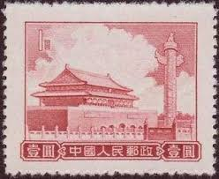 |
| Todocolección | china 50000,00. dr. sun yat sen año 1949. - Buy Antique stamps of China on todocoleccion | 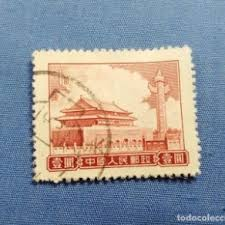 |
| Margipood | Shop - Page 109 of 279 - Margipood | 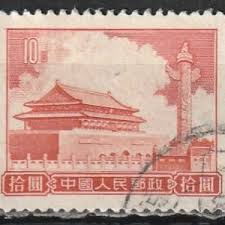 |
| eBay | Rare Japanese Stamp Quingdao 1926, 3 sen Japan stamp & 50 Nippon stamps | eBay | 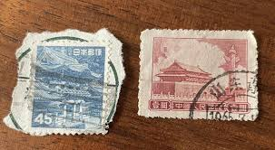 |
| eBay | 5 Stamps Chinese Stamps for sale | eBay | 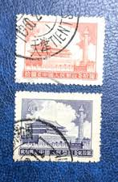 |
| Kenmore Stamp | Gate of Heavenly Peace - PRC #94 | 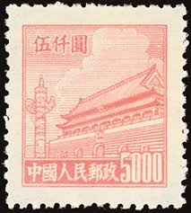 |
| eBay | China (PRC) 22 MNG | eBay |  |
| eBay | People's Republic of China Scott #67 Mint No Gum As Issued PRC | eBay |  |
| Find Your Stamps Value | NORTHEAST CHINA: Gate of Heavenly Peace - 中国东北: 东北贴用: 天安门$20000 Violet brown stamp price, value | 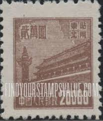 |
| eBay | Stamp China 1954 Peoples Republic 50 yuan Tian An Men with variety break "0" | eBay Australia | 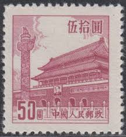 |
| eBay | PR China 1954 Sixth Issue $800 MNG A19P57F495 | eBay | 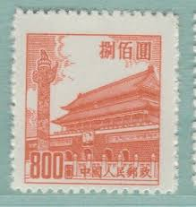 |
| eBay | Qing Dynasty Xuantong ascends the throne 7fen Block of Four and cancels the OG | eBay | 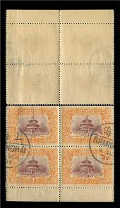 |
| eBay | TIMBRE JAPON JAPAN NIPPON TEMPLE | eBay | 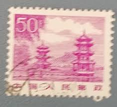 |
| lastdodo.com | Gate of heavenly peace 3000 (1951) - China - People's Republic - LastDodo | 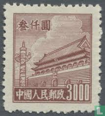 |
| Amazon.com | Amazon.com: China Stamps - 1949 , Liberated Area Yang NW92, NW93 : Northwest China, handstamped in violet People's Posts on Peking Views, MNH, F-VF : Toys & Games | 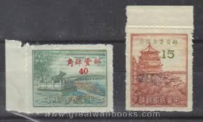 |
| eBay | PR China 1954 Sixth Issue $800 Used A19P57F494 | eBay | 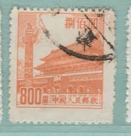 |
| eBay | China 1950 Scott #95 Gate of Heavenly Peace Mint NH | eBay |  |
| eBay | Ryukyu Islands - 1961 - 3 Cents Red Brown White Silver Temple Issue # 90 F-VF | eBay | 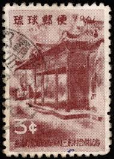 |
| eBay | RyuKyu 90, MNH. Michel 104. White Silver Temple, 1961. | eBay | 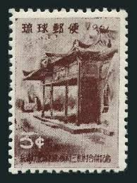 |
| eBay | 1954 CHINA SC#211 MNH NG VF🔥 GATE OF HEAVENLY PEACE🔥 | eBay | 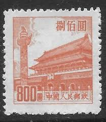 |
| Find Your Stamps Value | NORTHEAST CHINA: Gate of Heavenly Peace - 中国东北: 东北贴用: 天安门$1000 Orange Briefmarkenpreis | 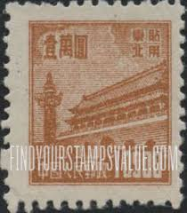 |
| eBay | 1950 China, R3, $300/500/800, Tien/Tian An Men, Gate of Heavenly Peace, MNH | eBay | 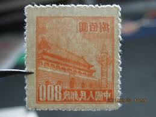 |
| eBay | China (Peoples Republic) #18 used | eBay | 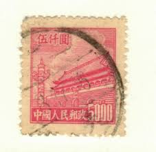 |
| eBay | China Chinese Manchoukuo Officially Sealed Stamp Mint Without Gum | eBay | 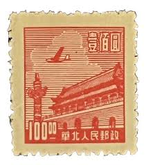 |
| Federal University of Agriculture, Abeokuta | STAMPS CHINA 1960 | 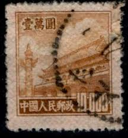 |
| eBay | CHINA 133 TEMPLE OF HEAVEN BLOCK OF 4 USED NO FAULTS VERY FINE! HBY | eBay | 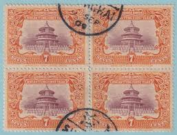 |
| eBay | People's Republic of China Scott #94 Used | eBay |  |
| eBay | China C71 (1-1) 1959 Group 5 Founding Ceremony Canzel F Without Thin Cracks | eBay | 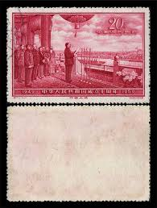 |
| eBay | CHINA PRC 1949 Sc # 4 $200 Original LANTERN & GATE OF HEAVENLY PEACE | eBay | 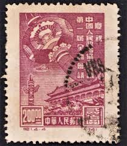 |
| eBay | China Sc 282-6, R9, incomplete set, No $2 (#283), Mint, No Gum as Issued, Fresh | eBay | 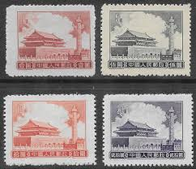 |
| eBay | PRC China Stamp 1951 Sct#98 Tian An Men Definitive ￥50,000 yuan 1PC MNH | eBay |  |
| eBay | 1961 China J88 40th anniversary of the founding of the Party Full Set Of stamps | eBay | 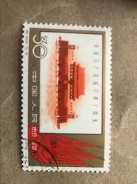 |
| eBay | P.R. CHINA 211 - Gate of Heavenly Peace "1954 6th Printing" (pa76500) | eBay | 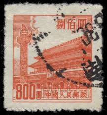 |
| eBay | PR China 1954 Sixth Issue $1600 MNG A19P57F497 | eBay | 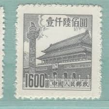 |
| eBay | China Sc 93, R4 $3000, Mint BLK of 6, No Gum as Issued, Fresh Color, Very Fine | eBay |  |
| eBay.de | PR China R3 Regular Definitive Tian An Men-3rd Print, R5-5th Print, R8 普3,普5,普8 | eBay.de |  |
| eBay | China (PR) #94 used | eBay |  |
| eBay | PR China 1954 Sixth Issue $400 Used A19P57F492 | eBay |  |
| eBay | $3000 Gate of Heavenly Peace SC#93 A13 ~ China Post No R4 ~ Used | eBay | 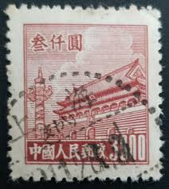 |
| eBay | 1950 china stamp tian an men 3000 Red | eBay | 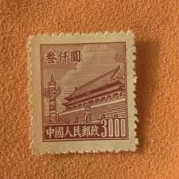 |
| eBay | China Stamp 1950 C4 Commemorating Inauguration of PRC (Original Printing) MNH | eBay | 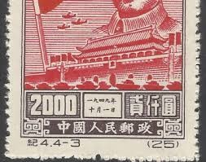 |
| ebid.net | China 1954 Gate of Heavenly Peace 1600 Used Stamp on eBid United States | 213883002 |  |
| eBay | China - 3.20 Purple "Chu Kwang Tower" Used - #3643 | eBay | 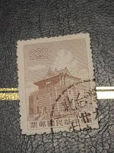 |
| eBay | China 1949, North China, Tiananmen - Gate of Heavenly Peace, MNG Stamp | eBay |  |
| eBay | r4_24_3) Manchukuo stamps, 1936-1937,sc83-94,96-100, Mint Hinged, Used. | eBay | 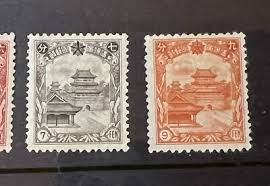 |
| eBay | PR China 1954 Sixth Issue $1600 MNG A19P57F498 | eBay | 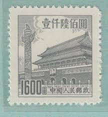 |
| eBay | China Stamps - 中国邮票-1950, R2 Scott 23第二次印刷天安门设计, MNH-VF | eBay |  |
| eBay | TaiwanChina ROC SC 20 NGAI (5fge) | eBay | 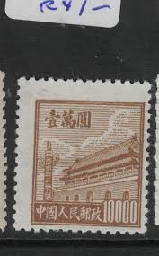 |
| eBay | RYUKYU 1961 WHITE SILVER TEMPLE VFNH Sc 90-2 | eBay | 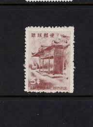 |
| eBay | MANCHUKUO 1936 Sc#94 12f Manchuria Temple Stamp MNH XF | eBay | 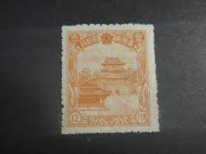 |
| eBay | Stamp China PRC 1954 R7 Tian An Men (6th Print) Set Block of 4 Set MNH. | eBay | 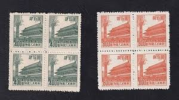 |
| eBay | China Stamp 1959 C71 Founding People's Republic 10th Anniversary MNH F-VF 90 OG | eBay | 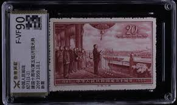 |
| eBay | CHINA - PRC Scott 87 Used | eBay | 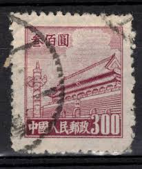 |
| eBay | Very RARE China error color GATES OF HEAVENLY PEACE SC95-100 void postage | eBay |  |
| eBay | China (PR) #95 used | eBay | 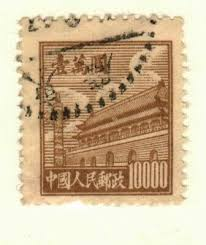 |
| Find Your Stamps Value | NORTHEAST CHINA: Gate of Heavenly Peace - 中国东北: 东北贴用: 天安门$2500 Yellow stamp price, value |  |
| eBay | China PRC : 1950s Gate of Heavenly Peace Issues Shanghai Cancel Cover Back Only | eBay | 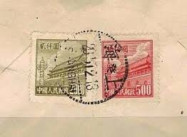 |
| eBay | Rare China Stamp R5 1951 100K Yuan Tlan An Men 5th Print MNH F-VF Coarse Paper | eBay |  |
| eBay | China PRC 1961-62 Buildings 50f Perf. 11 Fine Used A16P32F478 | eBay | 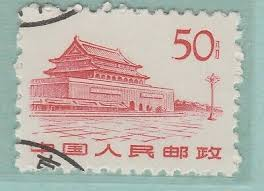 |
| Etsy | Postage Stamps,set of 8 ,gate of Heavenly Peace,pcr,china - Etsy | 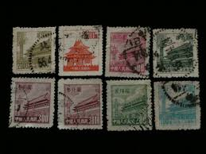 |